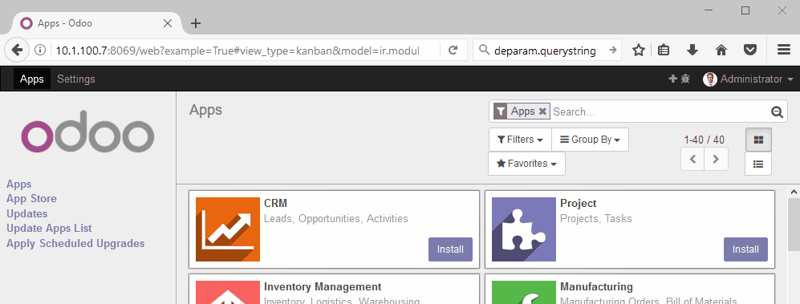

<?xml version="1.0" encoding="UTF-8"?>
<section class="oe_container">
    <div class="oe_row oe_spaced" style="width:100%">
        <h2 class="oe_slogan" style="color:#1F466F;">Toggle Developer Mode</h2>
        <h3 class="oe_slogan">To enable / disable developer mode from admin's main menu in Odoo</h3>
    </div>
    <div class="oe_row" style="width:100%">
        <div class="oe_span6">
            <p>Adds a top-level button for admin user which :</p>
            <ul>
                <li>enables developer mode by clicking on <span class="fa fa-plus"/> <span class="fa fa-bug"/></li>
                <li>disables developer mode by clicking on <span class="fa fa-minus"/> <span class="fa fa-bug"/></li>
            </ul>
            <p>this by staying on the same page.</p>
        </div>

    </div>
    <div class="oe_row" style="width:100%">
        <div class="oe_row_img oe_centered oe_spaced">
            
        </div>
    </div>
</section>
